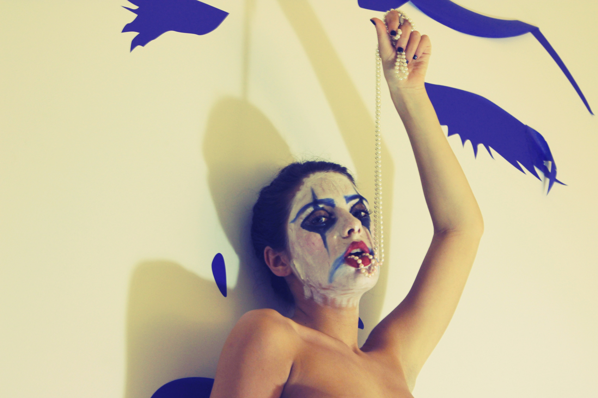

- The Sun Sets Red
- Ecstasy
- Hysteria
- Melancholy
- Nostalgia
- Euphoria
Spring 2014
Description: Investigating raw human emotion from five different perspectives



Adam Tomashek
social
Portfolio
- Portraits
- Tia Tomashek
Summer 2014
Description: Senior Portraits